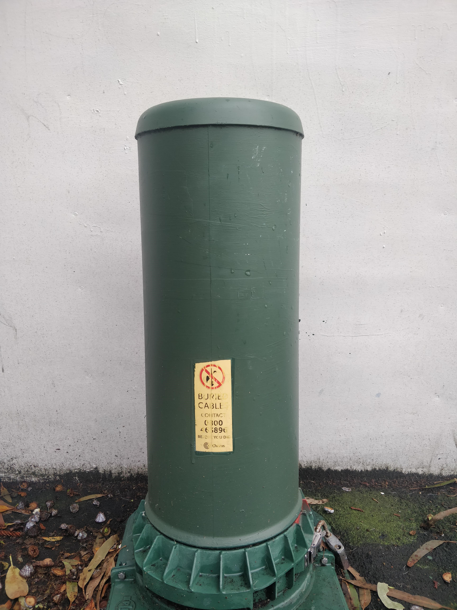

Cameras
There is a suprisingly large amount of cameras throughout Wellington. Hopefully the majority of these cameras are used for security rather than mass surveillance.


Manhole Cover
Here are some of the examples of manhole covers of Telecommunication infastructure across Wellington. One from the large successful company of chorus and from a now defunct United Networks.

Telephone Lines
New Zealand tends to use above ground Telephone/Power Lines to decrease the potential damages from earthquakes on underground..

Cables/Wires
Even whilst having a lot of above ground wiring, we also still use below ground cables of networks connecting electricty, gas and more.
